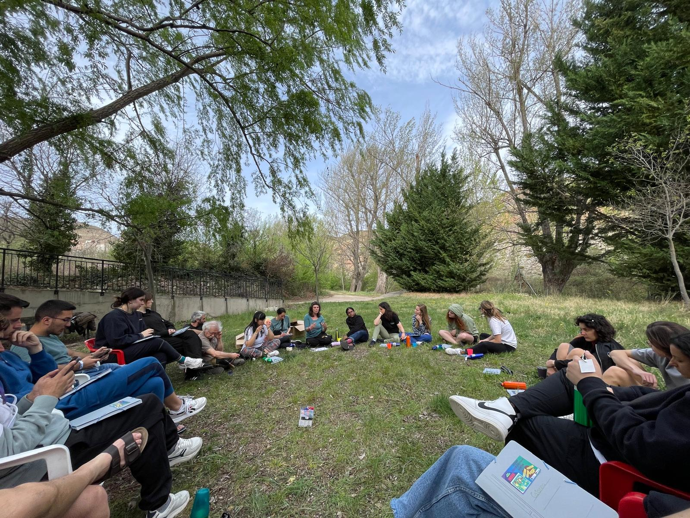
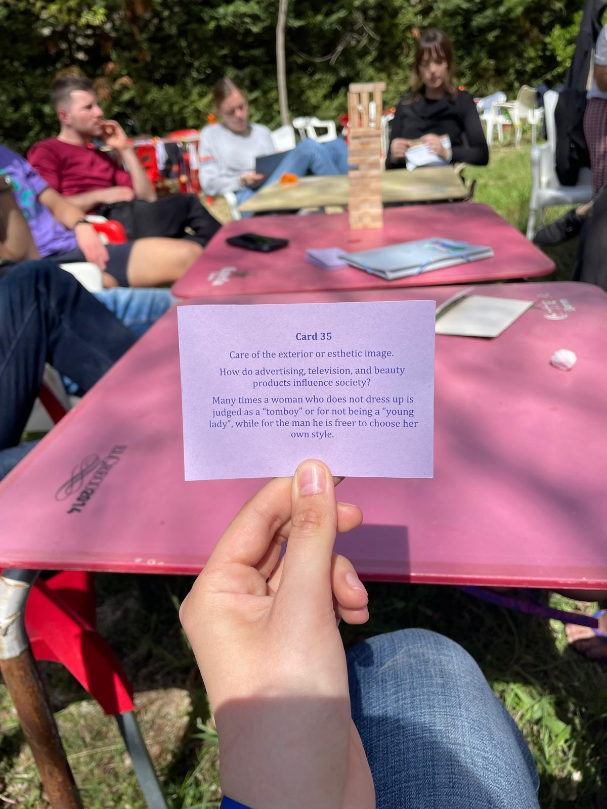

Ecology and Gender Equality
 Participating in the Erasmus project in Spain on greening and
gender equality was a profound and transformative experience for
us. This opportunity to collaborate with people from different
countries and explore complex topics related to the environment
and gender opened new perspectives and provided valuable lessons.
First, gender equality does not mean that all people must be
treated exactly the same, but that they must be given equal
opportunities and allowed to realize their potential equally.
To promote gender equality, it is important to recognize and
combat gender stereotypes that can affect how people are
perceived and treated in society. For example, preconceived
ideas about what it means to be "man" or "woman" can limit
individual choices and opportunities.
The experience in Spain also highlighted to us the importance of
international collaboration in solving global problems. By interacting
with participation from different countries, we learned to appreciate
the diversity of approaches and solutions in the field of ecology and
gender equality, and realized that the exchange of good practices
and knowledge can accelerate progress in these areas.
We also understood that education and awareness play a crucial
role in promoting green behaviors and gender equality in society.
Through awareness-raising activities and the exchange of experience
between participants from various cultural backgrounds, we
realized that each individual can contribute to protecting the
environment and combating gender inequalities through personal
and community-level actions.